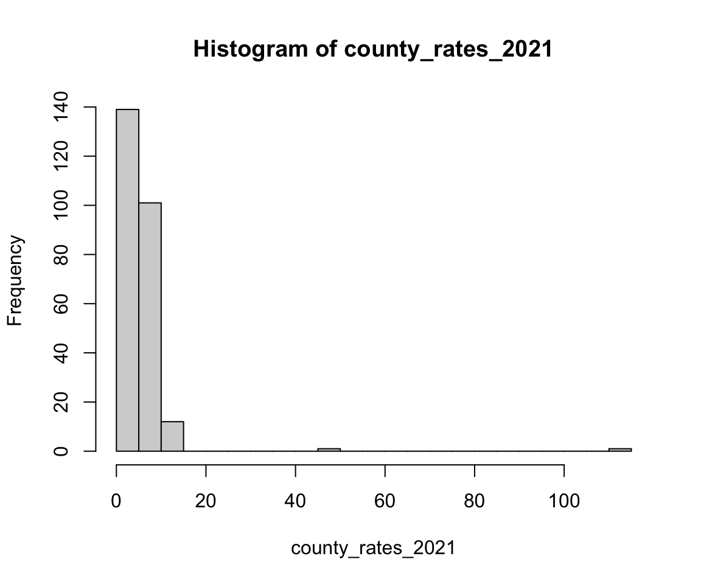
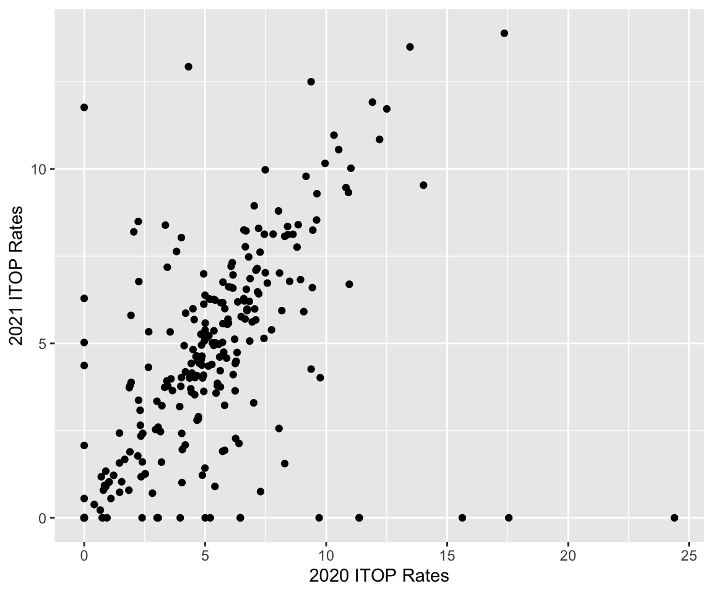

suppressPackageStartupMessages(library(tidyverse))
suppressPackageStartupMessages(library(car))
suppressPackageStartupMessages(library(HDSinRdata))
suppressPackageStartupMessages(library(gt))
suppressPackageStartupMessages(library(gtsummary))
data(tex_itop)9 Hypothesis Testing
In this chapter, we will look at hypothesis testing in R. We will start with single sample distributions and tests, and then we will look at hypothesis tests for comparing two samples. Examples will include testing for positive correlations, performing two sample paired t-tests, and testing for equal variance among groups. The data we will use in this section comes from the Texas Health and Human Services Department and includes the reported number of induced terminations of pregnancy (ITOPs) from 2016 to 2021, stratified by both race and county. The data also contains the rate of abortions per 1000 females aged 15-49. Read the data documentation to see the full variable descriptions.
We will use the tidyverse, gt, and gtsummary packages to help manipulate and summarize the data. The car package contains the function leveneTest() to implement a Levene’s test for homogeneity of variance across groups, and all other hypothesis tests are available in base R.
9.1 Univariate Distributions and One Sample Tests
Let’s begin by looking at a single outcome of interest - the number of induced terminations of pregnancy (referred to as ITOPs or abortions below) in 2021 per 1000 females ages 15-49 in each county. We use the number of females ages 15-49 as a proxy to scale the number of abortions by the population size, though this is not truly reflective of the number of people who can give birth in each county.
county_rates_2021 <- tex_itop$total_rate[tex_itop$year == 2021]
hist(county_rates_2021, breaks = 35)
We can see in the figure that this is a heavy-tailed distribution. Below, we find the 10 counties with the highest rates and see that there are some counties that very few total abortions but that have some of the highest abortion rates. This indicates a small population. On the other hand, we also observe Harris county, which contains the city of Houston and has both a high total abortion count and a high abortion rate.
tex_itop %>%
filter(year==2021) %>%
slice_max(n=10, total_rate) %>%
dplyr::select(c(county, total_itop, total_rate))
#> # A tibble: 10 × 3
#> county total_itop total_rate
#> <chr> <dbl> <dbl>
#> 1 Loving 1 111.
#> 2 Terrell 5 50
#> 3 Concho 4 13.9
#> 4 Harris 14122 13.5
#> 5 Irion 3 12.9
#> # ℹ 5 more rowsSome of the counties are so small that we may want to consider dropping them from our analysis. In particular, the rates in Loving County and Terrel County are so high that we might consider them to be outliers. For this one sample analysis, however, we do not remove them. If we wanted to estimate the mean abortion rate among counties \(\mu\) we can do so by simply using the mean() function. For reference, the CDC estimated the national abortion rate in 2020 to be 11.2 abortions per 1,000 women aged 15–44 years.
mean(county_rates_2021, na.rm=TRUE)
#> [1] 5.17Within R we can also calculate a confidence interval for this mean. Recall that a \((1-\alpha)\)% confidence interval for the mean is given by the equation \(\hat{\mu} \pm z_{1-\alpha/2} \cdot \frac{\hat{\sigma}}{\sqrt{n}}\), where \(\hat{\mu}\) is our sample mean, \(\hat{\sigma}^2\) is the sample variance, and \(n\) is the number of observations.
Below, we use this formula to calculate a 95% confidence interval for the mean abortion rate among counties:
est_mean <- mean(county_rates_2021, na.rm=TRUE)
est_sd <- sd(county_rates_2021)
z_alpha <- dnorm(1-0.05/2)
n <- length(county_rates_2021)
c(est_mean - z_alpha*est_sd/sqrt(n), est_mean + z_alpha*est_sd/sqrt(n))
#> [1] 5.04 5.29If we want to display this nicely, we can use the round() function, which allows us to specify a number of digits to be displayed, and the paste() function, which creates a single character string from multiple inputs.
lower <- round(est_mean - z_alpha*est_sd/sqrt(n),3)
upper <- round(est_mean + z_alpha*est_sd/sqrt(n),3)
paste("Confidence Interval: (", lower, ",", upper, ")")
#> [1] "Confidence Interval: ( 5.044 , 5.289 )"Suppose that we wanted to run a hypothesis test to compare the mean to a pre-determined value. In particular, the Texas Heartbeat Act was introduced in 2021 and drastically reduced the number of eligible abortions. We could test whether there were significantly fewer abortions in 2021 compared to 2020 using a one-sided t-test. Our null hypothesis is that \(\mu \geq 6.23\), the mean abortion rate in 2020. To run this hypothesis test, we use the t.test() function. For a one sample t-test, we need to specify our sample x, the alternative hypothesis alternative (default is a two-sided test), the true value of the mean mu (default 0), and a confidence level conf.level (default 0.95). Below, we run this t-test, and we can see from the result that we reject the null hypothesis at the 0.05 level and observe a statistically significant decline in the abortion rate in 2021.
t.test(county_rates_2021, alternative = "less", mu = 6.23,
conf.level=0.95)
#>
#> One Sample t-test
#>
#> data: county_rates_2021
#> t = -2, df = 253, p-value = 0.02
#> alternative hypothesis: true mean is less than 6.23
#> 95 percent confidence interval:
#> -Inf 5.98
#> sample estimates:
#> mean of x
#> 5.17The output for this test is printed above. If we want to reference these values, we will need to save the result. The object t_test_res is a list that contains information about the statistic, p-value, confidence interval, etc. The list of outputs are similar to other test objects, so it is useful to look at what is contained in each by reading the test documentation (?t.test). Below, we find the p-value from t_test_res.
t_test_res <- t.test(county_rates_2021, alternative = "less", mu = 6.23,
conf.level=0.95)
names(t_test_res)
#> [1] "statistic" "parameter" "p.value" "conf.int"
#> [5] "estimate" "null.value" "stderr" "alternative"
#> [9] "method" "data.name"t_test_res$p.value
#> [1] 0.01619.1.1 Practice Question
Test whether there were significantly more abortions in 2019 compared to 2020 using a one-sided t-test. Your test statistic should be -6.4736.
# Insert your solution here:One thing to consider is that the t.test() function assumes that the sample x comes from a normal distribution. The one-sample Wilcoxon signed rank test is a non-parametric alternative to the one-sample t-test that can be used to compare the median value of a sample to a theoretical value without assuming that the data is normally distributed. This test can be performed using the wilcox.test() function and takes in the same arguments as the t.test() function. Below, we can see that we again reject the null hypothesis at the 0.05 level and conclude that the median abortion rate in 2021 was significantly lower than 5.14, which was the median rate in 2020.
wilcox_res <- wilcox.test(county_rates_2021, alternative = "less",
mu = 5.14, conf.level=0.95)
wilcox_res
#>
#> Wilcoxon signed rank test with continuity correction
#>
#> data: county_rates_2021
#> V = 12807, p-value = 0.002
#> alternative hypothesis: true location is less than 5.14
wilcox_res$p.value
#> [1] 0.001939.2 Correlation and Covariance
We now look at two sample tests. To start, we look at the 2020 and 2021 rates by county. We pivot our data into a wider format in order to create 2020 and 2021 rate columns, and, this time, we filter out the Loving and Terrel counties to remove outliers. We then create a scatter plot of 2021 vs. 2020 rates and observe a linear correlation between the two.
county_rates <- tex_itop %>%
dplyr::select(c(county, total_rate, year)) %>%
filter(!(county %in% c("Terrell", "Loving")),
year %in% c(2020, 2021)) %>%
pivot_wider(names_from = year, values_from = total_rate) %>%
na.omit() %>%
rename("y2020"="2020", "y2021"="2021")
head(county_rates)
#> # A tibble: 6 × 3
#> county y2020 y2021
#> <chr> <dbl> <dbl>
#> 1 Anderson 6.84 5.07
#> 2 Andrews 1.85 0.792
#> 3 Angelina 5.81 6.00
#> 4 Aransas 3.44 7.18
#> 5 Archer 1.47 0.733
#> # ℹ 1 more rowggplot(county_rates) +
geom_point(aes(x=y2020,y=y2021)) +
labs(x="2020 ITOP Rates", y="2021 ITOP Rates")
We have seen before how to calculate the correlation between two columns using the cor() function. We can also calculate the covariance using the cov() function. As suspected, there is a positive correlation. The estimated covariance is around 5.2.
cor(county_rates$y2020, county_rates$y2021)
#> [1] 0.5
cov(county_rates$y2020, county_rates$y2021)
#> [1] 5.2Besides calculating the value of the correlation, we can also test whether this correlation is significantly different from zero. The function cor.test() tests for association between paired samples, using either Pearson’s product moment correlation coefficient, Kendall’s \(\tau\), or Spearman’s \(\rho\). Similar to the t.test() and wilcox.test() functions, we can also specify the alternative and conf.level arguments. Below, we test whether there is a non-zero correlation between the 2020 and 2021 county rates using Pearson’s product-moment correlation. We can see from the resulting p-value that we can reject the null hypothesis that the correlation is zero and conclude that it is instead significantly different than zero. This time we also print the computed confidence interval for our estimate.
cor_test_res <- cor.test(county_rates$y2020,
county_rates$y2021, method="pearson")
cor_test_res
#>
#> Pearson's product-moment correlation
#>
#> data: county_rates$y2020 and county_rates$y2021
#> t = 9, df = 250, p-value <2e-16
#> alternative hypothesis: true correlation is not equal to 0
#> 95 percent confidence interval:
#> 0.401 0.587
#> sample estimates:
#> cor
#> 0.5cor_test_res$conf.int
#> [1] 0.401 0.587
#> attr(,"conf.level")
#> [1] 0.959.3 Two Sample Tests for Continuous Variables
If we wanted to directly compare the difference between 2020 and 2021 rates, we could use a two sample test. In this case, because our samples are paired by county, we can use a two sample paired t-test. Specifically, we use a two-sided test to test the null hypothesis that the rates are equal by specifying two different vectors x and y. Note that we used the default values of mu=0 and alternative="two.sided". Additionally, we used the default value var.equal=FALSE, which implies that the samples may have different variances. From the results below, we reject the null hypothesis that the two county rates are equal at the 0.05 level. We also print a 95% confidence interval of the difference in means.
t_test_two_res <- t.test(x=county_rates$y2020, y=county_rates$y2021)
t_test_two_res
#>
#> Welch Two Sample t-test
#>
#> data: county_rates$y2020 and county_rates$y2021
#> t = 2, df = 497, p-value = 0.01
#> alternative hypothesis: true difference in means is not equal to 0
#> 95 percent confidence interval:
#> 0.145 1.278
#> sample estimates:
#> mean of x mean of y
#> 5.28 4.57
t_test_two_res$conf.int
#> [1] 0.145 1.278
#> attr(,"conf.level")
#> [1] 0.95In the tex_itop dataset, each county has also been categorized by whether it was urban or rural. Suppose we want to compare the change in abortion rates from 2020 to 2021 between rural and urban counties. First, we create a variable describing the rate change between these years using the code below. We choose to use the change in rate rather than percent change to avoid infinite or undefined values.
county_rates_type <- tex_itop %>%
dplyr::select(c(county, urban, county_type, total_rate, year)) %>%
filter(total_rate < 15, year %in% c(2020, 2021)) %>%
pivot_wider(names_from = year, values_from = total_rate) %>%
na.omit() %>%
rename("y2020"="2020", "y2021"="2021") %>%
mutate(rate_change = (y2021-y2020)) We again use a two-sample two-sided t-test, but this time the data is not paired. Below, we show an alternative way to specify a t-test test below using a formula lhs ~ rhs, where lhs is a numeric column and rhs is a factor column with two levels. We must also specify the data in this case. From the R output in this case, we would fail to reject the null hypothesis at the 0.05 level and conclude that the rate changes for urban and rural counties are not significantly different. We also print the estimates used in the t-test using estimate, which shows the estimated mean in both groups.
t_test_unpaired <- t.test(rate_change~urban, data=county_rates_type)
t_test_unpaired
#>
#> Welch Two Sample t-test
#>
#> data: rate_change by urban
#> t = 0.1, df = 205, p-value = 0.9
#> alternative hypothesis: true difference in means between group Rural and group Urban is not equal to 0
#> 95 percent confidence interval:
#> -0.495 0.563
#> sample estimates:
#> mean in group Rural mean in group Urban
#> -0.469 -0.503
t_test_unpaired$estimate
#> mean in group Rural mean in group Urban
#> -0.469 -0.503Note that this yields the same results as if we had specified the data using two vectors x and y.
x <- county_rates_type$rate_change[county_rates_type$urban == 'Urban']
y <- county_rates_type$rate_change[county_rates_type$urban == 'Rural']
t.test(x=x, y=y, paired = FALSE)
#>
#> Welch Two Sample t-test
#>
#> data: x and y
#> t = -0.1, df = 205, p-value = 0.9
#> alternative hypothesis: true difference in means is not equal to 0
#> 95 percent confidence interval:
#> -0.563 0.495
#> sample estimates:
#> mean of x mean of y
#> -0.503 -0.469Besides a t-test, we can also use a two-sample Wilcoxon non-parametric test using the wilcox.test() function, which has the same arguments as the function t.test(). Both the t.test() and wilcox.test() can only compare two groups. When we want to compare two or more independent samples, we can use a Kruskal-Wallis rank sum test using the kruskal.test() function or a one-way analysis of variance (ANOVA) using the aov() function.
This time we use the column county_type, which is an indicator for whether the county is urban, suburban, or rural according to the RUCC (rural-urban continuum codes) from the U.S. Department of Agriculture. For the kruskal.test() function, we can either specify the arguments formula (rate_change ~ county_type) and data (county_rates_type) or we can specify two vectors: x, a numeric vector, and g, a factor representing the group. For the aov() function, we specify the test using a formula and the data. To see the p-value, we have to use the summary() function to print the result. Again, both tests suggest that we fail to reject the null hypothesis at the 0.05 level.
kruskal.test(county_rates_type$rate_change,
county_rates_type$county_type)
#>
#> Kruskal-Wallis rank sum test
#>
#> data: county_rates_type$rate_change and county_rates_type$county_type
#> Kruskal-Wallis chi-squared = 2, df = 2, p-value = 0.3aov_res <- aov(rate_change~county_type, data=county_rates_type)
summary(aov_res)
#> Df Sum Sq Mean Sq F value Pr(>F)
#> county_type 2 7 3.36 0.53 0.59
#> Residuals 245 1547 6.319.3.1 Practice Question
Use an appropriate test to determine whether the ITOP rates in 2016 significantly differed by race. The test statistic should be 264.27 with associated p-value < 2.2e-16.
# Insert your solution here:9.3.2 Two Sample Variance Tests
We could also test whether the variance of a continous variable is equal between groups. To start, we compare the variance in abortion rates in 2021 between urban and rural counties using an F test. Our null hypothesis for this test is that the variance in both groups is equal. The function var.test() implements an F test and has the same main arguments as the t.test() function: vectors x and y OR a formula and data, the alternative hypothesis alternative, and conf.level. Additionally, we can specify the hypothesized ratio of the variances through the arugment ratio (default value 1). Note that this function assumes that the two samples come from normally distributed populations. We fail to reject the null hypothesis that the variance in rates are equal at the 0.05 level and print the estimate of the ratio of variances, which is around 1.11.
f_test <- var.test(y2021 ~ urban, county_rates_type)
f_test
#>
#> F test to compare two variances
#>
#> data: y2021 by urban
#> F = 1, num df = 187, denom df = 59, p-value = 0.6
#> alternative hypothesis: true ratio of variances is not equal to 1
#> 95 percent confidence interval:
#> 0.719 1.657
#> sample estimates:
#> ratio of variances
#> 1.12
f_test$estimate
#> ratio of variances
#> 1.12Lastly, we implement a Levene’s test to test whether group variances are equal when there are more than two groups. This test can be specified using a formula and data set, as below, or by providing two vectors y, a numeric vector, and g, a vector specifying the groups. This test is from the car package and has slightly different output than other tests. In particular, to access the p-value, we need to access the value named 'Pr(>F)'. In this case, we actually do reject the null hypothesis at the 0.05 level.
levene_test <- leveneTest(y2021 ~ as.factor(county_type),
county_rates_type)
print(levene_test)
#> Levene's Test for Homogeneity of Variance (center = median)
#> Df F value Pr(>F)
#> group 2 3.41 0.034 *
#> 245
#> ---
#> Signif. codes: 0 '***' 0.001 '**' 0.01 '*' 0.05 '.' 0.1 ' ' 1
levene_test[['Pr(>F)']]
#> [1] 0.0345 NA9.4 Two Sample Tests for Categorical Variables
In the two sample tests above, we were comparing the distributions of continuous variables. We now look at comparing distributions of categorical variables. We will first categorize counties by their abortion rate in 2020 being above or below 11.2, which was the national average rate that year. We display the distribution of this variable by the urban/rural grouping using a contingency table below.
county_rates_type$below_nat_avg <-
ifelse(county_rates_type$y2020 > 11.2, "Above Nat Avg",
"Below Nat Avg")
table(county_rates_type$below_nat_avg, county_rates_type$urban)
#>
#> Rural Urban
#> Above Nat Avg 3 4
#> Below Nat Avg 185 56We can use a Fisher’s exact test to test whether the classifications of being above and below the national average and being rural and urban are associated with each other. In this case, the null hypothesis is that the odds or being below the national average is equal between rural and urban counties. The fisher.test() function can either take in a contingency table as a matrix or can be specified by two factor vectors x and y, which is how we implement it below. Additionally, there is the option to specify the alternative and conf.level arguments. We do not see a statistically significant difference between urban and rural counties at the 0.05 level with the estimated odds ratio is around 0.23.
fisher_test <- fisher.test(county_rates_type$urban,
county_rates_type$below_nat_avg)
fisher_test
#>
#> Fisher's Exact Test for Count Data
#>
#> data: county_rates_type$urban and county_rates_type$below_nat_avg
#> p-value = 0.06
#> alternative hypothesis: true odds ratio is not equal to 1
#> 95 percent confidence interval:
#> 0.0325 1.3955
#> sample estimates:
#> odds ratio
#> 0.229
fisher_test$estimate
#> odds ratio
#> 0.229An alternative test is a Pearson’s Chi-Squared test, which can be used for large sample sizes. The counts of rural and urban counties in the ‘Above Nat Avg’ category are very small, so we recategorize our outcome to be at or above Texas’s average to avoid this complication. The chisq.test() function also takes in a contingency table as a matrix or can be specified by two factor vectors x and y. Another useful argument is correct (default is TRUE) which indicates whether to apply a continuity correction. For this test, we observe a statistically significant difference in the proportion of counties above the national average between rural and urban counties and reject the null hypothesis at the 0.05 level.
tex_mean <- mean(county_rates_type$y2020)
county_rates_type$below_tex_avg <-
ifelse(county_rates_type$y2020 > tex_mean, "Above Texas Ave",
"Below Texas Ave")
table(county_rates_type$below_tex_avg, county_rates_type$urban)
#>
#> Rural Urban
#> Above Texas Ave 84 39
#> Below Texas Ave 104 21chi_sq <- chisq.test(county_rates_type$below_tex_avg,
county_rates_type$urban)
chi_sq
#>
#> Pearson's Chi-squared test with Yates' continuity correction
#>
#> data: county_rates_type$below_tex_avg and county_rates_type$urban
#> X-squared = 7, df = 1, p-value = 0.01
chi_sq$p.value
#> [1] 0.009539.4.1 Practice Question
Repeat the Chi-Squared test, but this time use the RUCC codes instead of the urban column. You should get a p-value of 0.2799. Think about what could explain the difference between these results.
# Insert your solution here:9.5 Adding Hypothesis Tests to Summary Tables
In Chapter 4, we used the gt and gtsummary packages to create summary tables of variables. When creating a stratified table (done by add the by argument), we can automatically add p-values for hypothesis tests comparing across populations using the add_p() function. By default, the add_p() function uses a Kruskal-Wallis rank sum test for continuous variables (or a Wilcoxon rank sum test when the by variable has two levels) and uses a Chi-Squared Contingency Table Test for categorical variables (or a Fisher’s Exact Test for categorical variables with any expected cell count less than five). The chosen test(s) are displayed as footnotes.
tbl_summary(tex_itop, include = c(total_rate, white_rate, asian_rate,
hispanic_rate, black_rate,
native_american_rate),
by = "year", statistic = list(all_continuous() ~ "{mean} ({sd})")) %>%
add_p() %>%
as_gt() %>%
gt:::as.tags.gt_tbl()| Characteristic | 2016, N = 2541 | 2017, N = 2541 | 2018, N = 2541 | 2019, N = 2541 | 2020, N = 2541 | 2021, N = 2541 | p-value2 |
|---|---|---|---|---|---|---|---|
| total_rate | 4.8 (3.0) | 4.9 (4.9) | 5.3 (4.2) | 4.9 (3.3) | 6.2 (14.1) | 5.2 (7.9) | 0.2 |
| white_rate | 4.7 (3.8) | 5.1 (5.8) | 5.4 (6.0) | 5.1 (5.1) | 6.8 (21.3) | 5.5 (8.0) | 0.3 |
| asian_rate | 7 (32) | 12 (46) | 8 (21) | 7 (20) | 14 (55) | 7 (37) | 0.066 |
| hispanic_rate | 3.9 (3.7) | 4.7 (6.3) | 4.6 (4.6) | 4.6 (5.0) | 4.6 (5.8) | 4.4 (4.8) | 0.7 |
| black_rate | 9 (21) | 13 (65) | 26 (153) | 20 (80) | 25 (111) | 26 (121) | 0.13 |
| native_american_rate | 5.0 (24.0) | 9.3 (65.0) | 4.9 (17.8) | 2.3 (12.4) | 4.1 (21.1) | 2.5 (10.1) | 0.13 |
| 1 Mean (SD) | |||||||
| 2 Kruskal-Wallis rank sum test | |||||||
We observe that a Kruskal-Wallis rank sum test was used to compare abortion rates across year for each racial group. All of the reported p-values are above 0.05 so overall it indicates that there were not statistically significant changes across years in the abortion rate.
9.6 Recap Video
9.7 Exercises
For the following exercises, we will be using the pain data from the HDSinRdata package.
data(pain)Determine whether the presence or absence of follow-up information is significantly associated with the initial average pain intensity. What do the results suggest?
First, plot
PROMIS_PAIN_BEHAVIORgrouped by race (you can use thePAT_RACE_CATvariable that we defined in Chapter 7). What do you observe? Next, choose an appropriate test to determine whether this variable differs significantly by race.Examine the association between
CCI_BINandMEDICAID_BIN. Are these variable significantly related to each other? How would you describe their relationship?Recreate the summary table below. Then, recreate the p-values for
PROMIS_DEPRESSION,PROMIS_ANXIETY, andMEDICAID_BINusing the appropriate tests.